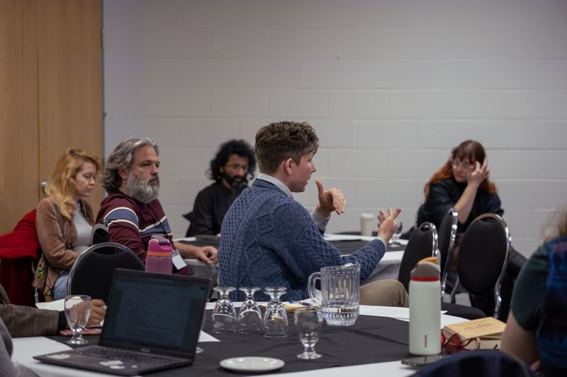

Find Your Scholarly Voice
The MA in Philosophy VERIFY Academic Office (official degree name) guides students into integrally Christian scholarship, whether they are called to the academy, the classroom or the public square, and helps each one develop a scholarly voice of their own.
- Degree
- MA in Philosophy
- Length
- Two years full-time; part-time available
- Seminars
- Ten, online, live, in Eastern Time
- Then
- A thesis of 17,000–25,000 words, defended orally
Who the MA is for
- People drawn to theology, biblical studies, culture, politics, education, aesthetics or religion, not only those who already call themselves philosophers.
- Teachers, ministers, writers and institutional leaders who want disciplined Christian thought behind their work.
- Anyone who wants to explore the spiritual roots of today’s cultural questions with others who take both seriously.
- Students preparing for doctoral study and a scholarly vocation.
You do not need a prior connection to ICS or to Reformational philosophy.
Admission. A four-year bachelor’s degree or its equivalent, preferably with a concentration related to your intended field at ICS, and an overall average of B+.
Spiritually attuned, culturally relevant
The MA treats faith as a source of questions, not a set of conclusions to defend. In small online seminars you read closely, argue in good faith and write, while a Senior Member mentor helps you find the question that is yours.
At ICS, students are called Junior Members and faculty are Senior Members. The names say what the relationship is: learning here is apprenticeship, not transaction.

Ten seminars and a thesis
- Foundation: 3 foundation courses
- Electives: 6 electives
- Capstone: 1 capstone interdisciplinary seminar
- + Language
- + Thesis and defence
3 foundation courses
Taken near the start, they give the whole community a shared biblical, philosophical and spiritual frame for the questions it pursues.
Likely: Religion, Life and Society: Reformational Philosophy (1107AC/2107AC), Biblical Foundations (1108AC/2108AC) and Meaning/Being/Knowing (2105AC). VERIFY Academic Office (which courses are the foundation courses)
6 electives
Chosen with your Senior Member mentor, usually three a year, to build competence in your field and across its neighbours. Up to two may be Toronto School of Theology courses.
1 capstone interdisciplinary seminar
Junior Members bring their growing expertise to a shared exploration of a pressing question in contemporary culture.
Most recently: IDS: The Post-Truth, the Un/Truth, and Nothing but the Truth (2400AC), taught by Neal DeRoo and Nik Ansell, Winter 2026. VERIFY Academic Office (confirm 2400AC as the capstone seminar)
Language
Before the thesis examination you show reading knowledge of one language other than English, relevant to your field or thesis. An approved language course usually meets this and counts as an elective.
Thesis and defence
With your mentor you build a reading list, write a proposal, then write a thesis of 17,000–25,000 words and defend it orally before your thesis committee.
With approval from your mentor, the Registrar and the Academic Dean, you can transfer up to two graduate courses from elsewhere.
Your field of study
Electives cluster in one of the interdisciplinary fields, chosen with your mentor:
- Aesthetics, Hermeneutics, and Philosophy of Discourse
- Anthropology and Ethics
- History and Historiography of Philosophy
- Knowledge, Truth, and Learning
- Philosophy of Religion and Philosophical Theology
- Social and Political Philosophy
- Theology and Biblical Studies
Field names as published on the current Program Design page. VERIFY Academic Office (official field names)
Full-time or part-time
The full-time pathway: two years
- Year 1 Foundation courses and your first electives, chosen with your mentor.
- Year 2, fall Electives, the capstone interdisciplinary seminar and the language requirement.
- Year 2, winter Thesis research and writing begin; the year ends with the oral defence.
Part-time. The same ten courses and thesis at your own pace, often one course a term. Your mentor helps you plan the sequence.
Full-time study means six semester courses a year, for example three in the fall and three in the winter. If you work full-time, ICS recommends one course a term. You can take a couple of courses for credit before committing to a program, and they can later count toward the degree.
Courses taught by full-time Senior Members
A sample of the seminars ICS’s full-time Senior Members teach regularly, with their current or most recent term.
-
God/Sex/Word/Flesh: Gender, Theology, and the Body
With feminist theologians, biblical scholars and philosophers, an attempt to develop an “embodied” theology open to the biblical vision that God will be “all in all.”
-
Religion, Life and Society: Reformational Philosophy
Central questions in philosophy as Dooyeweerd, Vollenhoven and the “Amsterdam School” addressed them, tested against recent Western philosophy and its critiques of foundationalism, metaphysics and modernity.
Prerequisite for Meaning/Being/Knowing; likely a foundation course. VERIFY Academic Office (foundation course?)
-
Biblical Foundations: Narrative, Wisdom, and the Art of Interpretation
The Bible, from Genesis to Revelation, read as the ongoing story of and for God and all God’s creatures, and the hermeneutical sensitivities that help us discern its wisdom now.
-
God in Flesh and Blood: Revolutions in Christology
Christology approached through biblical theology: how the New Testament’s Jesus relates to the narrative movements of the Hebrew Bible.
Biblical theology seminar, cross-listed with TST
-
Material Spirituality: Rethinking Religion
Religion as shaping how we experience the world, not as one kind of experience among others. Phenomenology, religious studies and secularism studies in conversation; no prior phenomenology assumed. Catalogue spelling “Rethinking”; the brief has “Re-Thinking”. VERIFY Program Director (course title spelling)
-
Meaning/Being/Knowing: The Disciplinary and Interdisciplinary Implications of a Christian Ontology
Dooyeweerd’s claim that creation does not “have” meaning but “is” meaning, and what that difference makes to the detailed work of any academic field.
In partnership with Calvin University
-
Imagining the World with Ricoeur: Narrative, Action, and the Sacred in Ricoeur’s Hermeneutic Phenomenology
Ricoeur’s From Text to Action and Figuring the Sacred: interpretation, action, imagination and revelation, as a way into his larger works.
-
IDS: The Post-Truth, the Un/Truth, and Nothing but the Truth
Neal DeRoo and Nik Ansell
The interdisciplinary seminar: what “post-truth” is, the anxieties and the possibilities it represents, from Parmenides and the Gospel of John to Derrida and Zuidervaart.
-
Issues in Phenomenology: Life
Life as a phenomenological concept, with Barbaras, Derrida and Henry, put into conversation with spirituality and world view in Reformational thought.
-
Pragmatism, Race, and Religion
How Pragmatism has interacted with, and been shaped by, the religious traditions of its cultural context.
Next steps
Neal DeRoo, MA/PhD Program Director
For questions about fit, fields of study and supervision.
Academic Registrar
For applications, admission requirements, registration and tuition.
Deadline. February 1, for fall admission. VERIFY Academic Office (current application deadline)